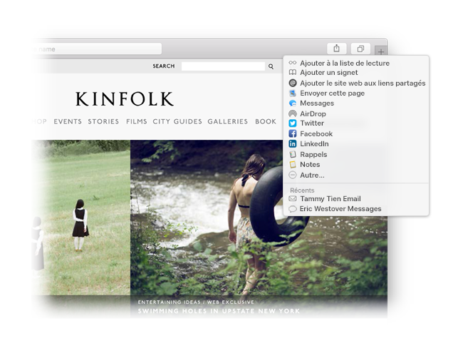

Trouvez un favori.
Cliquez sur le champ de recherche intelligent pour accéder à vos sites web favoris. Cliquez sur un site pour y accéder.

Épinglez un site.
Faites glisser un onglet vers la gauche pour épingler un site, afin qu’il reste dans la barre d’onglets.

Partagez un lien.
Cliquez sur  pour envoyer un lien par e-mail ou message texte, pour le partager sur Facebook ou Twitter, ou pour l’ajouter dans vos Notes.
pour envoyer un lien par e-mail ou message texte, pour le partager sur Facebook ou Twitter, ou pour l’ajouter dans vos Notes.